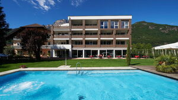

Laufwoche Südtirol 2022
Laufwoche Südtirol 2022
vom Samstag 23. bis Samstag 30. April
Strecke vom Samstag

Wir haben Doppelzimmer und Einzelzimmer mit Halbpension im Hotel Gantkofel*** zur Verfügung
Das Hotel liegt eingebettet in Wein- und Obstanlagen in Andrian an der Weinstraße, einer Gemeinde im Etschtal zwischen Bozen und Meran. Die Lage ist ideal, um unbeschwerte Ferien in Südtirol zu verbringen: ruhig gelegen, mit Blick auf die umliegende Bergwelt, mit Garten und Freischwimmbad, Fitness-u. Wellnessbereich sowie kurzen Entfernungen zu den Städten Bozen und Meran.
Das Hotel wurde im Winter 2017 teilweise umgebaut, modernisiert und stilvoll eingerichtet. In den Zimmern und Suiten finden Sie Zeit, sich auszuruhen, zu entspannen und zu träumen, der neue Panorama - Fitness u.Wellnessbereich wird Sie begeistern. Genießen können Sie ein reichhaltiges Frühstücksbuffet und leckere Abendmenüs, die bodenständige Südtiroler Küche mit mediterranen Gerichten kombinieren. Kostenloses W-Lan im ganzen Haus verfügbar.
Bericht der Laufwoche 2021 Entlebuch
Impressionen von der Laufwoche 2022
vom 23.-30. April Trailrunning Woche Südtirol, Andrian- zu den Fotos
Teilnehmer
- Marco und Petra Jäger
- Joschi Furrer und Nartano Kottmann
- Iris Capatt und "Lädi" Martin Ledermann
- Brigitte Eggerling und Thomas Pfeffer
- Martin und Isabella Lüönd
- Röbi und Maria Conrad
- Barbara Schuler
- Urs Ullmann
- Donat Hunger
- Corina Müler Nüesch
- Ruedi Wirz
- Monica und Peter Hug
- Katharina Fodor und Rolf Bianco
- Bea und Peter Altmann
- Silvia Pasina
- Jean-Marie Zogg
- Irene Breitmaier
- Sabine Haas
- Isabel und Hanspeter Meier
- Christine Cantieni